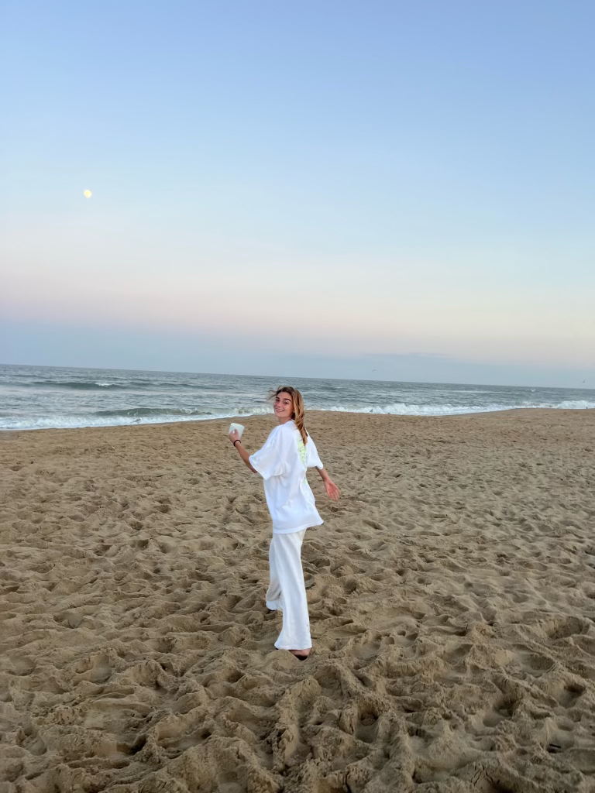

Our Mission
Instead of using new clothing items, we source our materials exclusively from local thrift stores, making each piece of clothing sold truly one-of-a-kind. Our commitment to sustainability and reducing waste is evident in the decision to use repurposed garments, ensuring that each item carries its own story and character.
In addition to our environmentally conscious practices, we are dedicated to giving back to the community. Around the Block donates 10% of our profits to Sloan Kettering Cancer Research Foundation in New York City, making a positive impact in the fight against cancer.
With each purchase from "Around the Block", customers can not only show their love for College Park, but also support cancer research efforts and contribute to a noble cause.
Meet Our Team

Gabi
Gabi is a Senior at the University of Maryland double majoring in Finance and Business Management.
She's passionate about bringing teams together to innovate. She continues to explore finance,
entrepreneurship, and business management in and outside the classroom.
Joelle
Joelle is a Senior at the University of Maryland double majoring in Journalism and Business Management.
She's fascinated by human centered and big authority stories and is devoted to
learning about making sustainable choices, especially in retail
When she's not writing articles in the middle of the night or conducting interview, she loves
reading books, journaling, daydreaming about traveling and living abroad, running and hanging
out with friends and family.